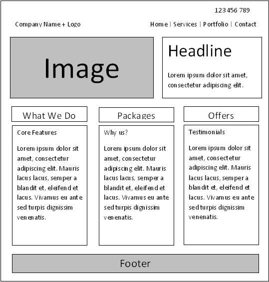

Responsive Web design is the approach that suggests that design and development should respond to the user's
behavior and environment based on screen size, platform and orientation.
The practice consists of a mix of flexible grids and layouts, images and an intelligent use of CSS media queries.
Mobile first web design shifts the focus from the more traditional desktop-centred design approach to initially creating your website specifically for the mobile experience. Not surprisingly, this shift effectively reverses the traditional approach. Beginning the design process for smaller screens, with the intention to progress to the desktop environment,
makes sense when more users are accessing website content on their mobile devices than anywhere else.
It is improtant because unlike traditional website this approch customises the site for mobile usage meaning faster
downloading of data and better layout and approcah, simply put it makes sense as majority of the customers have mobile phones
and its usage and demand is getting bigger by the day.
Pros And Cons
Sometimes you should ask yourself, why you need to do the same thing everyday when there’s a new bridge to shorten the path.
Think of a framework as a bridge that will help you code faster and easier. Did you notice
I didn’t include the word “better” in the last sentence? Faster and easier doesn’t always mean better,
but we will get to that later.
First things first, so what is a framework really?
It actually depends on the context it is used. It can be defined as an abstraction tool that makes it easier to
develop applications and reuse code.
“The framework aims to alleviate the overhead associated with common activities performed in Web development…
and they often promote code reuse.”
Like everything else, when it comes to its use, a framework has advantages and downsides.
A wireframe is a layout of a web page that demonstrates what interface elements will exist on key pages.
It is a critical part of the interaction design process.
The aim of a wireframe is to provide a visual understanding of a page early in a project to get stakeholder and project team approval before the creative phase gets under way. Wireframes can also be used to create the global and
secondary navigation to ensure the terminology and structure used for the site meets user expectations.
